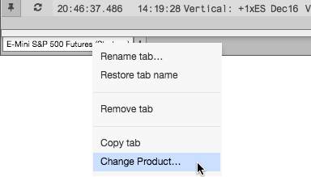

The RFQ Viewer displays RFQs for one product per tab in the viewer. You can change the product on a tab by using the Change Product... option on the tab's context menu.
To change products in the RFQ Viewer:
Right-click a tab in the RFQ Viewer and click Change Product....

Search for a product or click Explore to find a product in the Market Explorer.
The tab now displays instruments that have RFQs for the selected product.